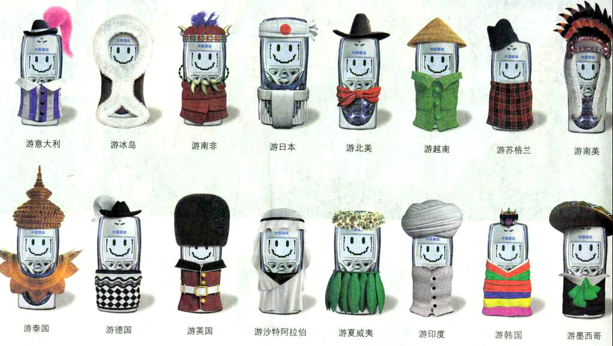
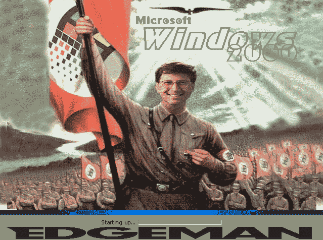
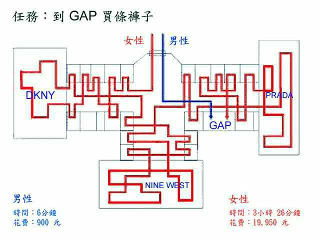
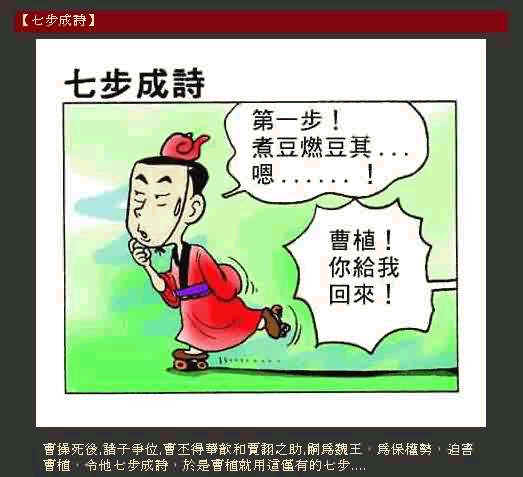
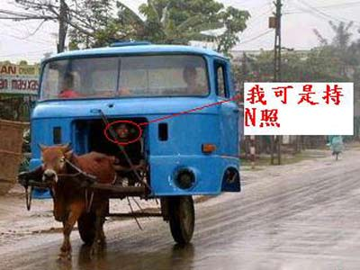
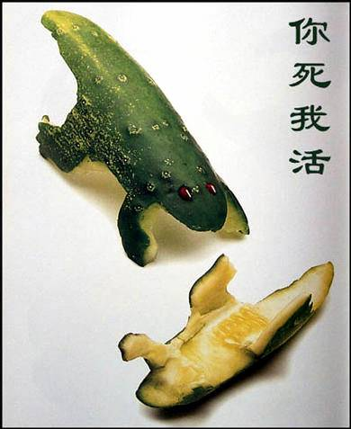

最大的愿望就是能挣多一点钱。
最好能中个500万大奖，这样就可以买辆保时捷了。
还可以周游世界！美的不得了！

唉，还是不要胡思乱想了！
人贵有自知之明，毛主席老人家教导得对。哪里会有那么好的运气！还是老老实实干活吧。
工作中更激情一点。

还要注意效率问题。

但也不能急于求成。
学习不能放松！
努力让自己才气横溢！

要有社会责任感，多思考一些国计民生的事。
加强环保意识。

从点滴做起。
与人相处和为贵(咦？后三个字好像一个人的名字？)，何必争得你死我活。

其实很多时候我们只有互相帮助，才能把事情做好。
平时没事可以上网，交一些有共同语言的网友。
来一次亲密接触，
交个漂亮的女朋友。

我对她会很专一，
就是结婚后也会保持，否则惹了麻烦就说不清楚了！

当然也不能免俗的看黄色A片啦。
至于电视嘛，没有崔永元的《实话实说》是没有看头了！
春节晚会凑和着看看吧，不知道还能不能看到冯巩说相声？
平时少遇到一些尴尬事。
也不要有这样的意外发生：
就说了这么多吧，希望你祝我心想事成。下面香车、美女和钱一并送给你。我知道都是你最喜欢的。
对了，有些女同志可能没有兴趣。就送给你们最喜欢的F4的靓照吧！
:)
祝各位新春快乐
回主页